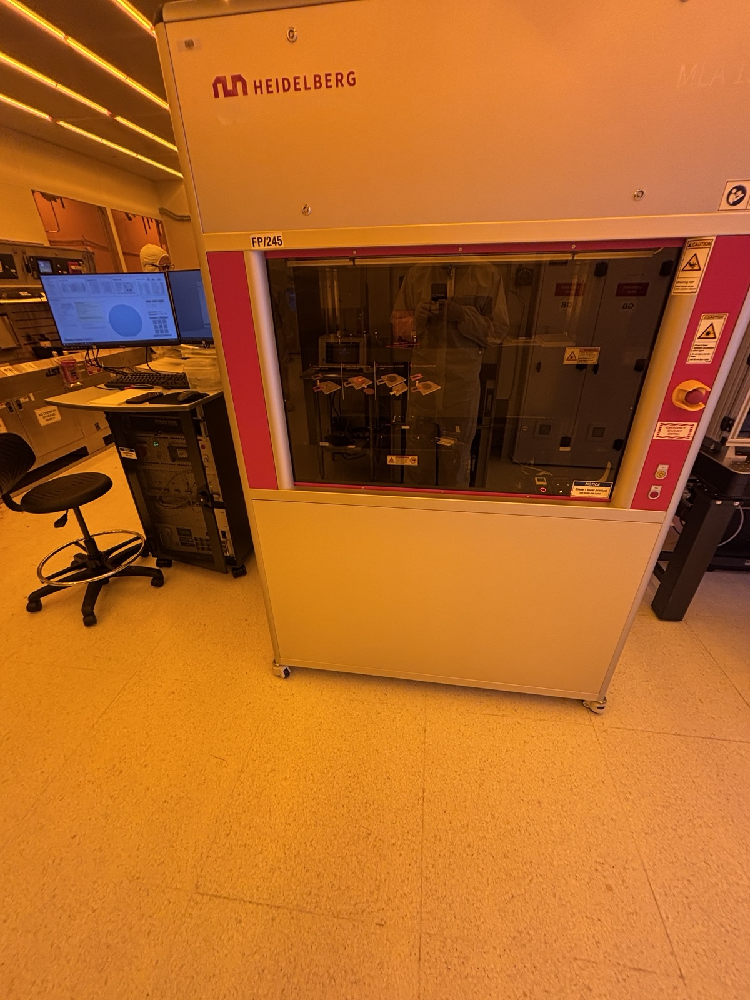
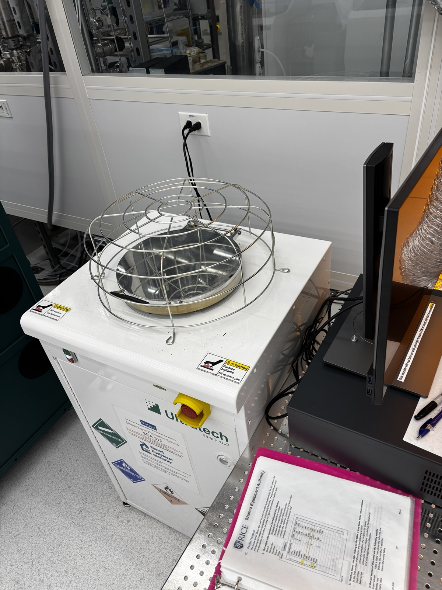
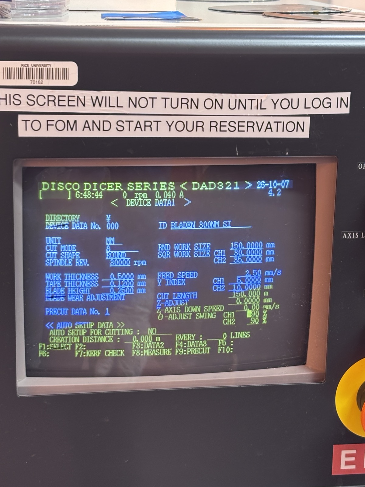

Undergraduate research · June 2026–present
EMERGE Lab
At Rice’s EMERGE Lab, I fabricate transistors in the cleanroom for research into predicting device behavior, with planned work on microelectromechanical switches.
Transistor fabrication
I’m responsible for fabricating transistors for a project exploring whether machine-learning models can predict the behavior of other transistors made from the same material. My focus is device fabrication for the study’s electrical characterization and predictive modeling.
We’re starting with silicon, with plans to extend the work to two-dimensional materials and PEDOT-based bioelectronic devices for neural interfaces. This part of the project will explore predictive models for devices made from a conducting polymer used in bioelectronics.
Cleanroom processes
My hands-on work includes spin-coating photoresists, baking, photolithography and development, chemical removal of polymer layers, and plasma cleaning. I also adjust process recipes, including spin speed and bake time, to suit the equipment and achieve the required samples.
I also use atomic layer deposition (ALD), ellipsometry, and wafer dicing as part of the fabrication workflow. These processes span thin-film deposition, film characterization, and separating wafers into individual chips.






MEMS microrelay
A planned extension of the transistor project is an electrostatically actuated MEMS microrelay, drawing on published relay research coauthored by Elad Alon. An applied voltage creates an electrostatic force that deflects a spring structure, using mechanical motion to open or close an electrical connection.
The research goal is to explore whether the same modeling approach can predict the relay’s behavior, extending the investigation from electronic transistors to mechanical switching devices.
Laser testing & positioning
My earlier work focused on a micromanipulator and light-tight enclosure for laser absorption testing of two-dimensional-material chips. The setup supports repeatable sample positioning while controlling light entering the experiment.
I designed the full mechanical setup in CAD, including the light box, chip holder, and positioning hardware. I assembled the micromanipulator using mostly 3D-printed parts, purchased motors, and electronics. The positioning system uses a Raspberry Pi Pico, stepper motors, and encoders to support sample alignment for optical measurements.